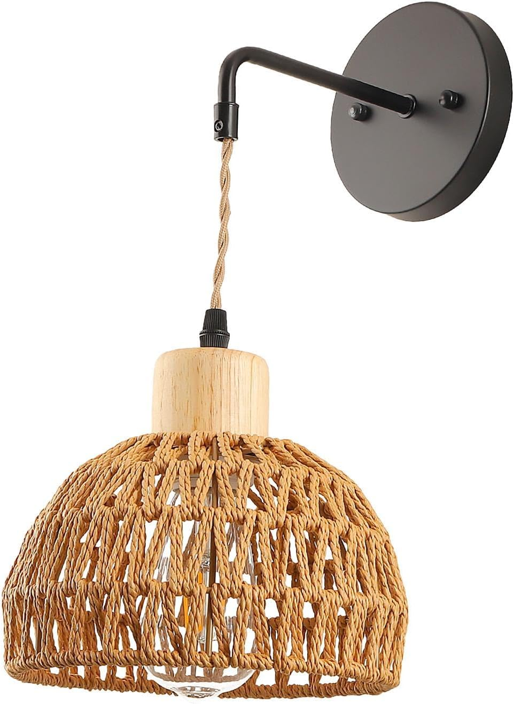

LAMPARA
- Diseño único: lámpara de pared interior de estilo rústico, ideal para sala de estar, cocina, comedor, recámara, baño, sala de estar, mesita de noche, pasillo, balcón, escaleras, etc.
- Material de alta calidad: el candelabro de estilo granja está hecho de material de ratán, duradero, simple y cómodo de usar.
- Decoración del hogar: la lámpara de pared decorativa de estilo clásico es perfecta para cualquier decoración moderna del hogar, combina con cualquier estilo de ambiente circundante y encaja perfectamente.
- Fuente de luz: esta lámpara de pared funciona bien con la foco base E26/E27. Nota: No incluye una foco.
- Tamaño del artículo: 20 x 24,5 cm. El aplique de pared es una decoración, también puede ser un gran regalo para amigos, regalo de inauguración de la casa.
|

|